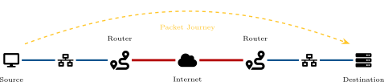
This diagram illustrates a packet’s journey through network infrastructure: source PC through Switch 1 to Router 1, across internet cloud to Router 2, through Switch 2 to destination server. The dashed golden arrow traces this path, showing how routing decisions forward traffic across network boundaries while Ethernet addresses change at each hop and IP addresses remain constant end-to-end.
Review: From IP Addressing to Routing
The Journey Ahead
Module 4: Addressing (naming the destination) Module 5: Routing (finding the path there)
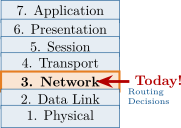
Module Overview and Learning Outcomes
Topics Covered
Routing Technologies and Tables
Dynamic Routing Protocols
Network Address Translation (NAT)
Firewalls and Security
Enterprise Network Topologies
Virtual LANs (VLANs)
Learning Outcomes
After this module, you will be able to:
This section introduces router roles, routing tables, and packet forwarding behavior across network boundaries.
The Router: Gateway Between Networks
Key Difference from Switches
Switches: MAC addresses (Layer 2) Routers: IP addresses (Layer 3)
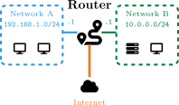
This diagram shows a router managing three connected interfaces: left interface connects to local LAN with PCs, right interface connects to server network, and WAN connection links to internet. Each interface has its own IP address and network identifier, allowing the router to switch traffic between networks and enabling inter-network communication.
Routing Tables and Path Selection
Key components of each entry:
Longest Prefix Match
If a packet for 192.168.1.50 matches both 192.168.0.0/16 and 192.168.1.0/24, the /24 wins because it’s more specific.
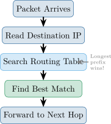
Static Routes
ip route 10.0.0.0 255.0.0.0 192.168.1.1
When to Use Static
Small networks, stub networks (one exit), or when you need security control over paths.
Default Route
ip route 0.0.0.0 0.0.0.0 203.0.113.1
Analogy
Static: “Take Highway 10 to Grandma’s.” Default: “For anywhere else, head to the main highway.”
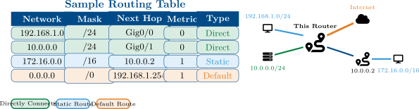
This diagram shows a router’s three route types: directly connected networks (local LANs with PCs and servers), remote networks accessed via next-hop routers, and the default route to internet. Three colored network regions demonstrate that routers use routing tables to decide: for local networks send directly; for remote networks forward to next hop; for unknown destinations use default route.
Reading the Table
To reach 172.16.0.0/16, send packets to next hop 10.0.0.2. For unknown destinations, use the default route via 192.168.1.254.
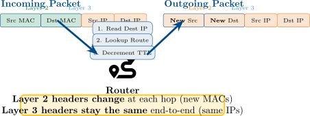
Problems with Fragmentation
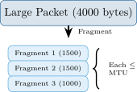
This MTU fragmentation diagram shows the process when a packet (4000 bytes) exceeds the maximum transmission unit: the router splits it into three fragments, each fitting within the 1500-byte MTU limit (Fragment 1: 1500 bytes, Fragment 2: 1500 bytes, Fragment 3: 1000 bytes). A brace on the right indicates that each fragment must be at most MTU size. This splitting adds processing overhead; modern systems use Path MTU Discovery to find the smallest MTU along the entire path, avoiding fragmentation altogether.
Path MTU Discovery
Modern systems discover the smallest MTU along the entire path to avoid fragmentation.
Case Study: Westley’s Journey to Florin
Case Study: Westley’s Journey to Florin
Westley is sending a message from the Pirate Ship network (172.16.0.0/24) to
Princess Buttercup at Castle Florin (10.0.0.0/24). The ship’s router has this routing
table:
| Network | Next Hop | Type |
| 172.16.0.0/24 | Directly Connected | Direct |
| 10.0.0.0/24 | 192.168.50.1 | Static |
| 0.0.0.0/0 | 203.0.113.1 | Default |
Westley’s PC: 172.16.0.25 Buttercup’s PC: 10.0.0.100
Review Questions
Which routing table entry will the router use for Westley’s packet?
What is the next hop IP address?
What would happen if someone deleted the 10.0.0.0/24 entry?
Case Study Solution: Westley’s Journey to Florin
Solution: Westley’s Journey to Florin
Router uses 10.0.0.0/24—longest prefix match for 10.0.0.100.
Next hop is 192.168.50.1 (path to Castle Florin).
If deleted, router uses default route (0.0.0.0/0) via 203.0.113.1—a longer path through the kingdom!
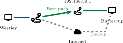
Key Lesson
“As you wish!” Specific routes always win over the default. Without proper entries, packets may take the long way—or never arrive!
This section focuses on practical router setup, route verification, and path diagnostics using common operational tools.
Essential Settings
Two Configuration Methods
CLI: Command-line interface (Cisco IOS) GUI: Web-based management interface
Sample CLI Commands
Router> enable Router# configure terminal Router(config)# hostname Florin-GW Florin-GW(config)# interface g0/0 Florin-GW(config-if)# ip address 192.168.1.1 255.255.255.0 Florin-GW(config-if)# no shutdown Florin-GW(config-if)# exit Florin-GW(config)# ip route 0.0.0.0 0.0.0.0 203.0.113.1
Tip
Always save config: copy run start
Cisco IOS Commands
show ip route Display full routing table
show ip route network Show specific route entry
show ip interface brief Interface status summary
show running-config View current configuration
Windows / Linux Commands
route print (Windows) netstat -r (Windows/Linux) Display host routing table
ip route (Linux) Modern Linux routing display
netstat -rn Numeric output (no DNS lookup)
Quick Check
Use ip route get IP on Linux to see which route would be used for a specific destination.
Uses TTL manipulation:
Use Cases
Find where packets get stuck, identify slow links, verify routing path.
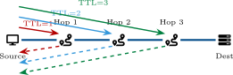
This traceroute diagram shows TTL-based path discovery: a source PC sends probes with incrementing TTL values (colored arrows labeled TTL=1, 2, 3) toward destination server through three intermediate routers. Each router decrements TTL; when TTL reaches zero, the router responds with its address and timing. Dashed return arrows show ICMP responses from each hop revealing the complete path with latency measurements, helping diagnose routing problems.
Sample Output
| 1 | 2ms | 1ms | 1ms | 192.168.1.1 |
| 2 | 10ms | 9ms | 11ms | 10.0.0.1 |
| 3 | 15ms | 14ms | 15ms | 203.0.113.50 |
Dynamic routing protocols exchange topology information automatically and select best paths based on protocol metrics and policies.
Dynamic Routing Protocols Overview
Why Dynamic Routing?
Two Categories
IGP (Interior Gateway Protocol) Within an organization: RIP, OSPF, EIGRP
EGP (Exterior Gateway Protocol) Between organizations: BGP
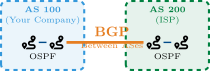
This diagram shows two autonomous systems (ASes) separated by administrative boundaries: AS 100 (Your Company, blue) runs OSPF internally with two routers exchanging routes efficiently. AS 200 (ISP, green) also runs OSPF internally. The critical orange WAN link between them carries BGP (Border Gateway Protocol), the inter-AS protocol that allows organizations to exchange routing information at the internet’s administrative borders. OSPF handles fast convergence and optimal paths within an organization, while BGP provides intentional, policy-based routing between organizations.
Autonomous System (AS)
A network under single administrative control. Each AS has a unique number (ASN).
RIP (Routing Information Protocol)
Best for: Small, simple networks
RIP Limitation
Hop count ignores link speed! A 10 Gbps path with 3 hops loses to a 1 Mbps path with 2 hops.
EIGRP (Enhanced Interior Gateway RP)
Best for: Cisco enterprise networks
EIGRP Advantage
Keeps backup routes ready—failover is nearly instant!
OSPF (Open Shortest Path First)
OSPF Cost Formula
Cost =
| 100 Mbps | Cost = 1 |
| 10 Mbps | Cost = 10 |
| 1 Gbps | Cost = 1 |
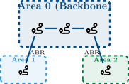
This diagram illustrates the relationship between routing protocols and administrative autonomy: Company network (AS 100, blue) runs OSPF internally with two connected routers communicating via OSPF, while ISP network (AS 200, green) also uses OSPF internally with its routers. The critical orange WAN link between them runs BGP (Border Gateway Protocol), which is the inter-AS protocol that exchanges routes between autonomous systems at the administrative boundary. This architecture shows how OSPF handles intra-AS routing efficiency while BGP manages inter-AS reachability across the internet.
ABR
Area Border Router connects areas to the backbone (Area 0).
When to Use BGP
Warning
BGP misconfigurations can break parts of the Internet! Handle with care.
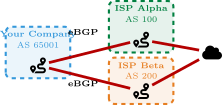
This multihoming diagram demonstrates redundancy through dual ISP connections: a company router connects to both ISP Alpha (AS 100, green) and ISP Beta (AS 200, orange) via separate eBGP connections, allowing traffic to the internet cloud to split between them. Both ISPs connect to the internet, providing path redundancy and load distribution. If one ISP link fails, traffic automatically reroutes through the other, ensuring business continuity. This architecture is typical of enterprises requiring high availability.
Multihoming
Connecting to multiple ISPs provides redundancy and load balancing.
Route Selection and Administrative Distance
Routing Protocol Metrics
| Protocol | Metric |
| RIP | Hop count |
| EIGRP | Bandwidth + delay |
| OSPF | Cost (bandwidth) |
| BGP | Path attributes |
What If Multiple Protocols?
When the same route is learned from different protocols, Administrative Distance decides which to trust.
Administrative Distance (AD)
Lower AD = more trusted
| Route Source | AD |
| Directly Connected | 0 |
| Static Route | 1 |
| EIGRP (internal) | 90 |
| OSPF | 110 |
| RIP | 120 |
| External EIGRP | 170 |
| Unknown | 255 |
Example
If OSPF (AD 110) and RIP (AD 120) both know a route, OSPF wins!
Case Study: Inigo’s Path to Count Rugen
Case Study: Inigo’s Path to Count Rugen
Inigo Montoya has configured routers to help him find Count Rugen (the six-fingered
man). His router has learned two paths to Rugen’s network (10.20.30.0/24):
| Protocol | Next Hop | Metric | AD |
| OSPF | 192.168.1.1 | Cost: 20 | 110 |
| RIP | 192.168.2.1 | Hops: 3 | 120 |
Both paths are currently working. Inigo needs to reach Rugen as quickly as possible!
Review Questions
Which route will the router prefer and why?
What is Administrative Distance and how does it apply here?
If the OSPF path fails, what happens?
Case Study Solution: Inigo’s Path to Count Rugen
Solution: Inigo’s Path to Count Rugen
Router prefers OSPF route—AD of 110 beats RIP’s AD of 120.
Administrative Distance is a “trustworthiness” rating. Lower AD = more trusted. When multiple protocols know a route, lowest AD wins.
If OSPF fails, router automatically uses RIP route as backup!
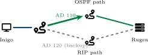
Key Lesson
“Hello. My name is Inigo Montoya...” Administrative Distance determines which protocol to trust. The backup route is ready if the primary fails!
At the network edge, address translation and filtering enforce policy while enabling internal hosts to reach external networks.
Edge Routers and Network Boundaries
Key responsibilities:
Demarcation Point
The boundary where your network ends and the ISP’s begins. Usually at the edge router.
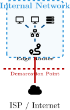
Network Address Translation (NAT)
NAT Terminology
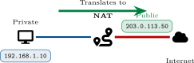
This NAT translation diagram illustrates the core concept: a PC on private network (192.168.1.10 on left, blue) connects through a NAT router to the internet. The green arrow labeled "Translates to" shows that the router dynamically rewrites the source address in outgoing packets, changing the private address to a public address (203.0.113.50, green) that the ISP assigned. Return traffic is automatically reverse-translated back to the private address. This allows multiple private devices to share a single public IP address, saving address space and providing network privacy.
Why NAT Matters
Your home network might have 20 devices, but your ISP only gives you one public IP. NAT makes this work!
Static NAT
192.168.1.10 ↔ 203.0.113.10
Dynamic NAT
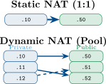
This NAT types diagram compares two translation approaches: Static NAT (top, 1:1 mapping) translates one private IP (.10) to exactly one public IP (.50) with a fixed, permanent relationship—good for servers requiring consistent addresses. Dynamic NAT (bottom, pool) maps multiple private IPs (.10, .11, .12) to a pool of public IPs (.50, .51, .52) using temporary associations—when a device connects, it gets assigned the next available public IP, and when disconnected, that public IP returns to the pool. Both require sufficient public IPs; neither scales to thousands of devices on a single public address.
Limitation
Both Static and Dynamic NAT require one public IP per active connection. Not scalable!
How PAT Works
Host sends packet (src port 12345)
Router changes src IP to public
Router assigns unique port (e.g., 40001)
Tracks mapping in NAT table
Return traffic uses port to find host
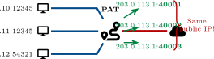
This Port Address Translation (PAT) diagram illustrates how multiple private devices share a single public IP: three PCs (192.168.1.10:50001, 192.168.1.11:40002, 192.168.1.12:54321) all pass through a PAT router and emerge as port multiplexed connections under the same public IP (203.0.113.1) but with different port numbers (:40001, :40002, :40003). The red brace on the right emphasizes that all three distinct internal connections appear to the internet as one IP address with different ports. This is why home networks with 65,000 available ports can support thousands of simultaneous connections with just one public IP address.
Capacity
With 65,000 available ports, one public IP can support thousands of simultaneous connections!
What Firewalls Do
Default Behavior
Most firewalls: Deny all, permit by exception. Only explicitly allowed traffic passes.
Firewall Types
Trend
Modern networks use NGFW for comprehensive protection.
Placement Options
DMZ (Demilitarized Zone)
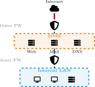
Defense in Depth
Multiple firewall layers provide better protection than a single firewall.
This section introduces VLAN segmentation, trunking, and security practices for multi-segment switched environments.
Benefits of VLANs
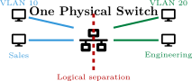
This VLAN isolation diagram shows a single physical switch (center) containing two logically separate networks: VLAN 10 Sales (blue, left with two PCs) and VLAN 20 Engineering (green, right with two PCs). Despite being on the same physical switch hardware, a red dashed line represents the logical separation—devices in VLAN 10 cannot communicate directly with VLAN 20 devices. This Layer 2 isolation provides network segmentation for security and traffic management, though cross-VLAN communication requires a Layer 3 router.
Key Point
VLANs create Layer 2 isolation. Cross-VLAN traffic requires Layer 3 routing!
The Problem
How do VLANs span multiple switches? We need a way to carry VLAN info between switches.
Trunk Ports
Access vs Trunk
Access port: One VLAN, untagged Trunk port: Multiple VLANs, tagged
This VLAN trunking diagram shows two physical switches (Switch 1 on left, Switch 2 on right) connected by a thick orange trunk link carrying both VLAN 10 (blue) and VLAN 20 (green) traffic simultaneously. Despite being on different physical switches, VLAN 10 devices on the left connect logically to VLAN 10 devices on the right, and VLAN 20 devices span both switches—maintaining logical separation across physical infrastructure. The 802.1Q protocol tags each frame with a 12-bit VLAN ID, allowing the trunk to multiplex multiple VLANs. This enables geographically distributed network segmentation where logically grouped devices remain isolated from other VLANs regardless of physical switch location.
802.1Q Tag
Adds 4-byte tag to Ethernet frame:
One port supports both:
Configuration Example
switchport mode access switchport access vlan 10 switchport voice vlan 50
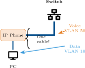
This Voice VLAN diagram shows how a single cable can carry both voice and data traffic: an IP phone sits at the center with a switch connection above and a PC plugged into the phone below, using just one physical cable from switch to phone. The phone tags traffic as Voice VLAN 50 (orange) destined to the switch, while the PC’s data uses Data VLAN 10 (blue). The switch separates these two VLANs logically, giving voice traffic higher QoS priority. This converged network approach saves cabling costs and enables quality voice calls even when data traffic becomes heavy, as voice is sensitive to delay and jitter.
Why Separate?
Voice is sensitive to delay and jitter. Separating it ensures calls stay clear even when data traffic is heavy.
What is Native VLAN?
Security Risk
Attackers can exploit native VLAN mismatches to hop between VLANs. This is called VLAN hopping. Best practices:
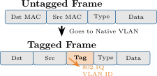
This diagram contrasts untagged and tagged Ethernet frames: an untagged frame (top) carries only traditional Ethernet headers (Dst MAC, Src MAC, Type, Data) and is automatically assigned to the native VLAN when sent across a trunk. A tagged frame (bottom) inserts a 4-byte 802.1Q tag after the Src MAC field, containing the VLAN ID (12 bits) and Priority field (3 bits for QoS). Untagged frames bypass VLAN classification, while tagged frames are delivered to their specific VLAN. This mechanism allows switches to multiplex hundreds of VLANs across single trunk links by explicitly marking each frame with its VLAN membership.
Configuration
switchport trunk native vlan 999
VLAN 1 Concerns
VLAN 1 carries management traffic by default. Keep it separate from user data!
Case Study: Miracle Max’s Potion Shop
Case Study: Miracle Max’s Potion Shop
Miracle Max runs a potion shop with three departments, each on its own VLAN:
| Department | VLAN | Subnet |
| Potion Brewing | VLAN 10 | 192.168.10.0/24 |
| Customer Sales | VLAN 20 | 192.168.20.0/24 |
| Billing Office | VLAN 30 | 192.168.30.0/24 |
The Sales team (192.168.20.50) needs to check inventory on the Brewing server (192.168.10.10), but their packets aren’t getting through!
Review Questions
Why can’t Sales communicate directly with Brewing?
What device is needed to enable this communication?
What is this process called?
Case Study Solution: Miracle Max’s Potion Shop
Solution: Miracle Max’s Potion Shop
VLANs are separate broadcast domains—Layer 2 isolation prevents direct communication between VLANs.
A router (or Layer 3 switch) is needed to route between VLANs.
This is called inter-VLAN routing.
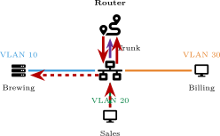
Key Lesson
“Have fun storming the castle!” VLANs provide security through isolation, but inter-VLAN routing lets authorized traffic flow when needed.
Key Concepts:
VLANs & Network Design:
This module explored routing protocols, network address translation, firewalls, VLANs, and enterprise network design. You learned how routers make forwarding decisions, how dynamic routing protocols adapt to topology changes, how NAT/PAT conserve addresses, and how VLANs provide logical segmentation. In the next module, we’ll examine network services including DHCP and DNS.